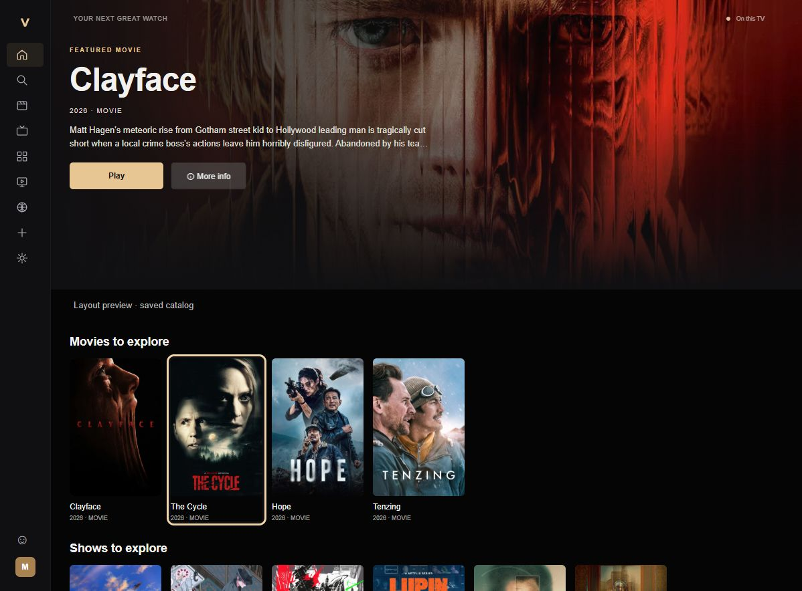

Room to explore.
Browse a visual interface with featured titles and catalog shelves, made for viewing from the sofa.
Explore the interface ↗A considered space for your big screen.
Explore, tune in, and find your next watch
with Velora.

A TV experience should feel at home on a TV. Velora brings browsing, Live TV and sports together in an interface built around your remote.
Browse a visual interface with featured titles and catalog shelves, made for viewing from the sofa.
Explore the interface ↗Move with the D-pad. Use Up and Down in Live TV, then press OK to change the channel.
Open Live TV or head into Sports Center to explore available events and their sources.
Inside Sports Center ↗Available streams for the same event, brought together. Choose a source yourself, or let detected-error fallback try another matching source.
Events and playback depend on external providers. Some streams may be unavailable or require another source.
Get the official Android APK from the public Velora release on GitHub.
Download Velora 3.0 Release notes & available files ↗Download the official release, then transfer the APK to your Android TV device if needed.
In your device settings, allow your chosen file manager to install unknown apps. Open the APK and follow the prompts.
Launch Velora and navigate with your remote. Already using Velora? Install over the existing app to keep your data.
Velora is an Android TV app with a remote-focused interface. Compatibility and playback can vary by device; see the official release notes for current installation information.
Download the official APK and install it over your existing Velora installation. The 3.0 release notes advise keeping the app installed and avoiding clearing its data.
Try another available source for the event. Sports Center supports manual source selection and detected-error fallback. External providers determine stream availability, so playback is not guaranteed.
Use the download on this page or the official public GitHub releases. Check the release notes and available files before installing.
You can support Velora's creator through Buy Me a Coffee.